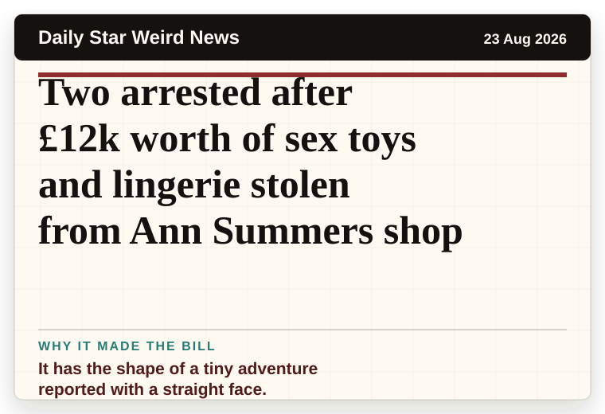
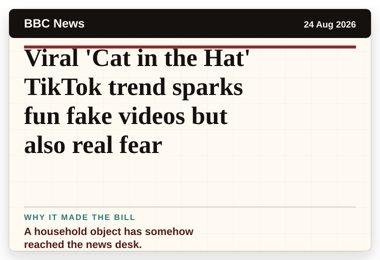
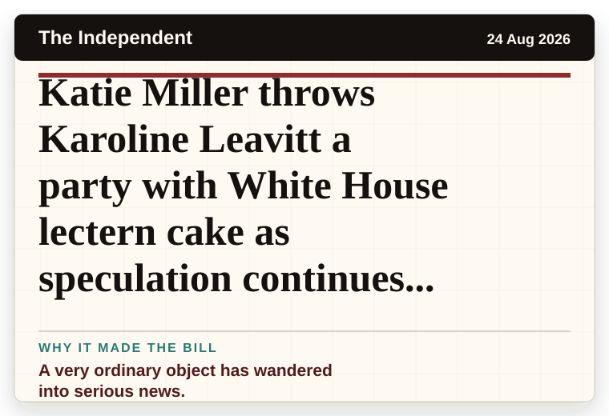
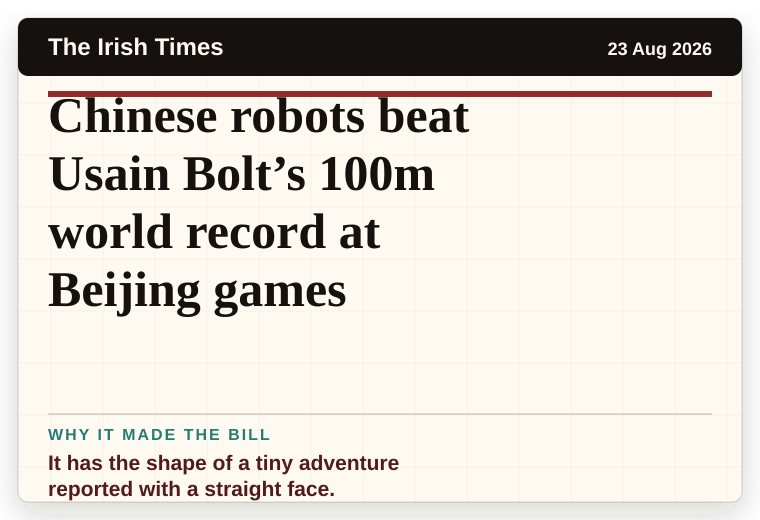
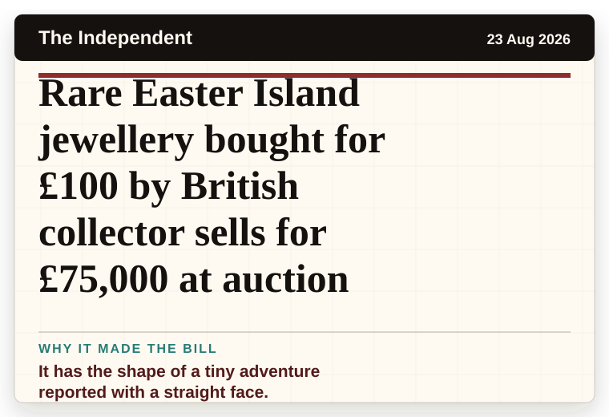
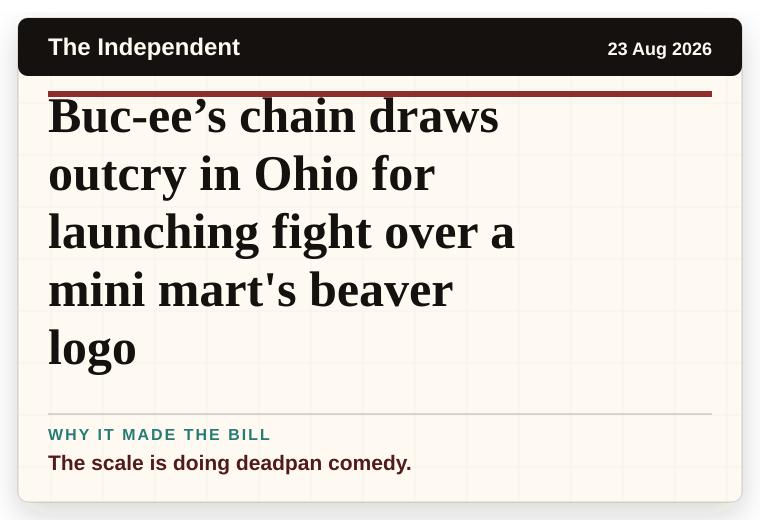
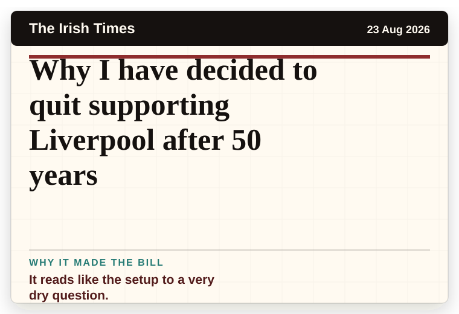

NT News
Australia
Top banana: NT farmers’ battle after cyclones
A very ordinary object has wandered into serious news.
The latest daily picks, linked back to the original sources. Search the room, pick a source, or follow a headline out to the full story.
Record updated: 24 Aug 2026, 07:40 AM AEST
Showing 17 headline candidates from the refresh run completed on 24 Aug 2026, 07:40 AM AEST.
A very ordinary object has wandered into serious news.

It has the shape of a tiny adventure reported with a straight face.

A household object has somehow reached the news desk.

A wonderfully specific detail has taken centre stage.

A wonderfully specific detail has taken centre stage.

It has the shape of a tiny adventure reported with a straight face.

A wonderfully specific detail has taken centre stage.

A wonderfully specific detail has taken centre stage.

A mystery is doing a lot of work in a very small sentence.

A wonderfully specific detail has taken centre stage.

A household object has somehow reached the news desk.

A very ordinary object has wandered into serious news.
The word chaos gives it open-mic energy.

It has the shape of a tiny adventure reported with a straight face.

It has the shape of a tiny adventure reported with a straight face.

The scale is doing deadpan comedy.

It reads like the setup to a very dry question.